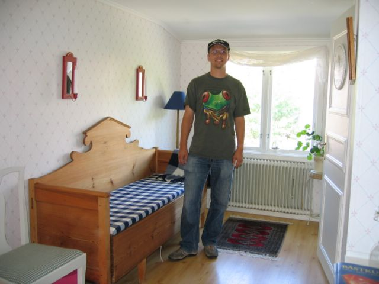

First |
Previous Picture |
Next Picture |
Last |
------------------------------ |
PICTURES HOME |
BORIS HOME

Orust, as you'll see from the following pictures, is a
lovely vacation island off the west coast of Sweden. The quiet, natural
beauty, and amazing light are really something not easily forgotten. We
visited Boris' high-school friend Anders there. Nader, another VIS person,
also came along together with Anders' two brothers--a bit of a reunion
actually.
img_0527.jpgtest